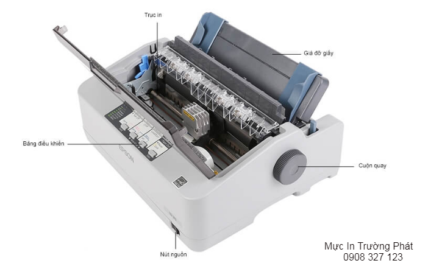
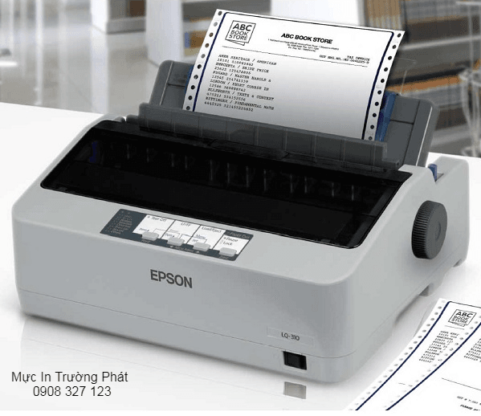

Ưu Và Nhược Điểm Của Máy In Kim?
Ngày nay, máy in kim là một sản phẩm không thể thiếu ở các đơn vị cần xuất hóa đơn thường xuyên. Máy in kim giúp công việc của kế toán nhẹ nhàng, nhanh chóng hơn, ít xảy ra sai sót. Cũng như chuyên nghiệp hơn trong ánh mắt của khách hàng.
Đây là loại máy in áp dụng công nghệ in ma trận điểm, thực hiện in ấn bằng các đầu kim.

Cấu tạo của máy gồm 2 bộ phận chính là đầu kim và băng mực (ribbon mực). Số lượng đầu kim phổ biến thường là 7, 9, 18 hoặc 24, được sắp xếp thành 1 cột, 2 cột hoặc 1 hàng. Số lượng đầu kim càng nhiều bản in càng rõ nét hơn.
Khi máy in kim nhận được lệnh in, các đầu kim của máy chuyển động dựa trên cơ chế từ tính và đâm xuống băng mực. Để tạo lực tác động giúp chuyển mực in từ băng mực lên giấy in theo nội dung yêu cầu.
Tuy nhiên, máy có thể thực hiện nhiều nhiệm vụ mà các máy in khác không thể làm được như:
- Sử dụng để in nhiều bản sao của văn bản cùng một lúc cực nhanh.
- Có thể in nhiều nhân vật và đồ họa có độ khó cao
- Khả năng in rất chi tiết nhờ nguyên lý tích tụ, nhiều chấm trên một diện tích giấy rất nhỏ.
Vì thế, trong nhiều công việc và lĩnh vực, người ta không thể thay thế bất kỳ một máy in nào khác ngoài máy in kim.
Nguyên tắc họat động của máy
Khi có lệnh in đầu in di chuyển theo chiều ngang. Truyền tín hiệu điện đến đầu in nhằm kiểm soát lực đâm của đầu kim vào dãy băng mực cho thích hợp. Tạo nên những điểm trên giấy và hình thành nên những ký tự.
Phần lớn đầu in 9 kim thì những kim này được xếp thành 1 cột, 24 kim thì được xếp thành 2 cột cho chất lượng in tốt hơn.
Máy in được trên những loại giấy gì?
Máy in kim epson có thể in được trên nhiều loại giấy với độ dày, mỏng khác nhau. Trong đó phổ biến nhất là 2 dạng giấy in chuyên dụng gồm:
- Giấy nhiều liên (giấy carbonless): Sử dụng trong in hóa đơn, in các dạng phiếu, bảng kê nhiều liên…
- Giấy in liên tục, giấy cuộn đục lỗ: Người dùng chỉ cần lắp cuộn giấy, sau khi in xong mỗi trang thì xé ra là được, không cần thêm giấy nhiều lần.
Sử dụng máy in kim đúng cách như thế nào?
Khi sử dụng máy , ngoài việc tuân thủ đúng hướng dẫn của nhà sản xuất để lắp đặt, thực hiện chính xác các lệnh in… Thì bạn cũng nên lưu ý thêm một số điểm sau để giúp máy vận hành bền bỉ, kéo dài tuổi thọ hơn.
Giữ giấy in luôn khô, phẳng, không sử dụng giấy bị ẩm, nhàu để tránh máy in kim bị kẹt giấy.
Khi băng mực hết mực thì cần thay mới ngay để không làm ảnh hưởng tới đầu kim.
Đặt máy in ở nơi khô thoáng, bằng phẳng, tránh tiếp xúc trực tiếp với ánh nắng mặt trời, các nguồn nhiệt, nguồn ẩm lớn… Và đảm bảo hệ thống dây điện, dây cáp được kết nối an toàn, gọn gàng.
Mực máy in kim Epson
Cũng giống như các máy in hiện nay sử dụng mực in canon, mực in hp, … Thì máy in kim sẽ sử dụng một dạng mực đặc biệt gọi là Ribbon. Cấu tạo ruột ribbon là sợi vải được tẩm mực. Khi in, kim của máy in sẽ đâm lủng ribbon để tạo nên chữ trên trang giấy.
Ribbon hết mực khi đã bị kim đâm thủng nhiều lần. Lúc này mực trên ribbon không còn nữa làm chữ bị mờ đi hoặc ribbon bị rách tưa. Cần thay ngay ruột ribbon mới để tránh ảnh hưởng tới máy in kim.

Ưu và nhược điểm của máy
Ưu điểm
- Máy có thể được sử đụng dể in chất rất nhiều chất liệu khác nhau như việc bạn sử dụng máy in laser hoặc máy in phun.
- Giúp bạn có thể tiết kiệm chi phí tốt nhất trên mỗi trang in
- Tốc độ in rất nhanh, hiệu suất in hàng tháng rất lớn.
- Khi mực in bị cạn, hết mực, bản in sẽ bị ờ dần màu mực. Không đột ngột dừng lại toàn bộ quá trình in như khi bạn sử dụng các dòng máy in khác.
- Máy có thể tiếp giấy liên tục
- Nhiều mẫu mã thiết kế và kiểu dáng đa dạng
- Máy in kim giá rẻ hơn so với các máy in có cùng chức năng
- Chi phí sửa chữa, thay thế các linh kiện thấp
Nhược điểm
- Máy gây ra tiếng ồn khá lớn, ảnh hưởng đến môi trường và không gian làm việc của bạn mỗi lần in ấn
- In đồ họa có độ phân giải thấp, hiệu suất màu hạn chế,
- Chất lượng giới hạn và tốc độ thấp hơn so với các máy in thông thường
- Tuy được hỗ trợ giấy cuộn với máy kéo giấy khá tốt. Nhưng bạn vẫn có thể phải lăn giấy bằng tay rất mất thời gian.
- Hay bị kẹt giấy, rách giấy khi sử dụng giấy báo
Trên đây là những thông tin tìm hiểu về máy in kim cũng như các ứng dụng, chức năng của máy. Hy vọng bài viết có thể giúp bạn hiểu rõ hơn. Và lựa chọn cho mình sản phẩm thích hợp nhất để sử dụng.
Cần nạp mực hoặc sửa máy in tận nơi? Mực In Trường Phát có mặt trong 30 phút tại TP.HCM — in test trước khi tính tiền, bảo hành 1 tháng.
0908.327.123 · 0819.007.394 (Zalo cả 2 số)